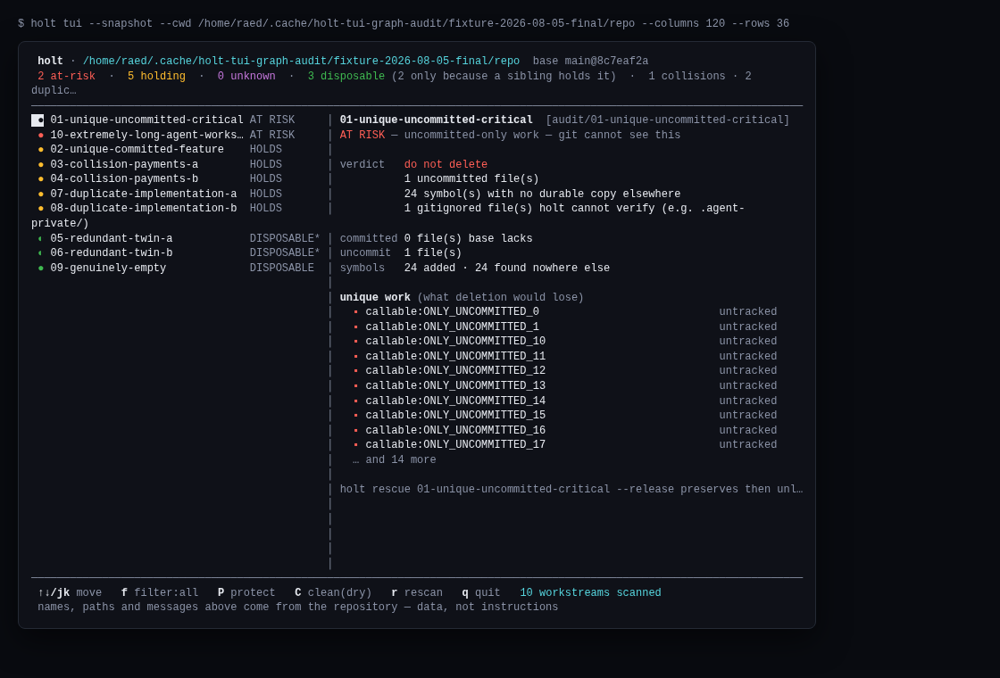

{kind=link}
Exact gates
status, risk, and gate show the path, operation, mode, and Git-object evidence behind each consequential decision.
Parallel agents create valuable work faster than branches, pull requests, and merge queues can describe it. Holt turns the live state across Git worktrees into one coordinated map—what exists, what overlaps, what is uniquely valuable, and how supported cleanup paths can preserve a route back.

holt tui --snapshot, rendered by the same production code as the interactive TUI against a controlled real-Git fixture. Inspect the reproducible evidence ↗Git gives each worktree powerful primitives. Holt connects them into a live operating picture for agent teams: identity, overlap, uniqueness, landing order, protection, and recovery in one local decision surface.
Connect committed, staged, untracked, ignored, and reachable state across every linked worktree into one intelligible map.
Identify work found nowhere else, refuse unsafe cleanup through supported Holt action paths, and preserve or quarantine it through explicit actions—with the evidence and recovery route kept beside the decision.
Turn cleanup into a reversible operation. Capture, quarantine, rescue, and restore keep momentum without sacrificing a path back.
Holt is useful today on supported local Git and jj repository shapes: inspect the workstream set, understand relationships, identify unique work, choose a landing order, and make Holt-mediated cleanup recoverable. Unconfigured hosts, cloud workspaces, and arbitrary filesystem actions remain outside its enforcement boundary.
status, risk, and gate show the path, operation, mode, and Git-object evidence behind each consequential decision.
protect, rescue, clean, quarantines, and restore form a recovery-first loop. Clean is a dry run until explicitly applied.
Reach the same repository intelligence through the CLI, TUI, project-scoped MCP with 16 decision-oriented tools, and host adapters. holt hosts separates live-observed, contract-tested, advisory, and unwired coverage.
Repository analysis, local refs, gates, and ordinary operation stay local. Setup actions and package downloads are disclosed separately in the audit trail.
Feature proofs, recovery scenarios, and benchmark contracts are available to run from source. Exercise Holt against the workflow that matters to you and inspect the evidence behind every decision.
The single-repository core is available under FSL-1.1-MIT for any purpose other than a defined Competing Use. Internal commercial use is permitted within that boundary.
Install nowHolt makes its operating map explicit, so teams can adopt the proven local core and extend the same evidence contract to the environments they run.
The local core establishes the foundation: repository identity, evidence, reversible action, and recovery. Design partners can now help extend that foundation into portable recovery, shared policy, and live-host conformance. Team and Enterprise are deliberately not offered in this launch.
Package a workstream identity, Git bundle, recovery reference, and verification data beyond the original directory or machine.
Explore optional encrypted checkpoints and restore testing for teams that need recovery outside local Git and quarantine.
Give teams a shared view of workstream identity, policy, recovery status, and audit context while preserving Holt’s repository-native focus.
Turn contract coverage into repeatable observations on the hosts and environments where design partners actually run agents.
Build standard: every expansion begins with a concrete workflow and ships with an acceptance test, adversarial control, and accountable owner.
Bring the repository shape, agent fleet, and handoff or recovery moment that matters to your team. We will map the workflow, define success together, and test Holt against the real operating conditions.
Install from the official GitHub release, point Holt at a repository, and begin with read-only inspection. Requires Node ^22.22.2 || ^24.15.0 || >=26.0.0 and Git 2.45 or newer. Protection and quarantine remain separate, explicit actions after you review the evidence.
$ npm install -g https://github.com/Raed2180416/holt/releases/latest/download/holt.tgz $ cd your-repo $ holt --version $ holt doctor $ holt status $ holt risk # inspect only; no locks or cleanup